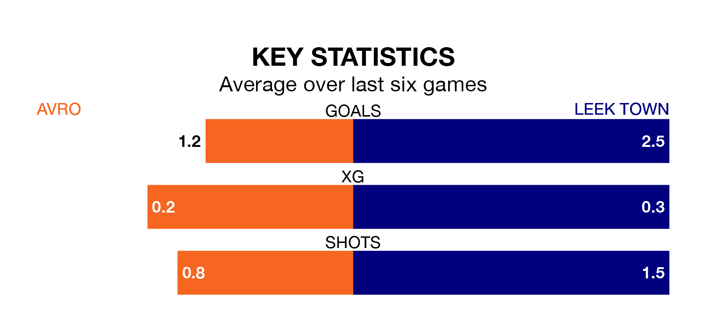

Two of the Northern Premier League Division One West's meanest defences go head-to-head on Saturday, when Leek Town visit Avro.
Only one side – Widnes – has conceded fewer goals than Leek to date: the away side have let in just 35 goals in 34 games.
Avro have conceded 37 goals in 33 games, giving them the joint-fourth tightest back line so far this season.
Leek are top of the table after 34 games, of which they have won 23 and drawn six, earning 75 points.
Avro are 10 places behind Town in 11th, with 11 wins and 12 draws putting them on 45 points.
The home team are in disappointing form in the Northern Premier League Division One West, with two wins and four losses from their last six games.
With five wins and a draw over that period, the visitors' form is much better – they have taken 16 points from 18, compared to Avro's six.
Avro's last match was on Monday, a 4-2 win against Trafford.
Leek beat Newcastle Town 2-1 last time out, also on Monday.
Updated: 16:41 (UTC), 04/04/24